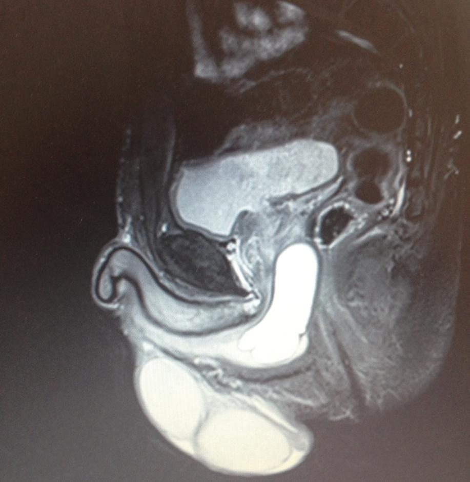

доказательства
Da:Alberto Data: 13/06/2017
Venivo da 4 anni di dolori bruciori fastidi e disfunzioni mai spiegate e comprese, 7 visite preso altri urologi «affermati» e numerose cure incoerenti a base di antibiotici e antiinfiammatori che terminavano in un nulla di fatto;finalmente incontro il dott.Guercini un grande Uomo e un Grandissimo e Preparatissimo specialista; sono certo che abbia compreso il mio problema perche mi precedeva nella descrizione dei sintomi;finalmente ho una risposta alle mie domande e una diagnosi CERTA ai miei problemi di salute.Dopo una visita accurata e approfondita il dottore ha impiegato 40 minuti del suo tempo a spiegarmi nei dettagli origine causa e soluzione dei miei problemi perche ci teneva che io comprendessi appiebo.Un’esperienza media e umana indimenticabile. Non smettero mai di ringraziarla dottore.
Da:Edoardo Data: 12/04/2017
Più che una visita, vorrei condividere quella che è stata una rara esperienza medico diagnostica.
Un’ora e mezza in cui sono stati fatti nell’ordine: questionario preliminare, anamnesi, uroflussometria, eco prostatica e solo con questo «protocollo»sono state escluse altre patologie che avessero come sintomi la minzione frequente, l’infiammazione del perineo e la presenza di una ragade. A seguire, una diagnosi certa, una cura precisa e ora a distanza di un mese i risultati sono al di là di ogni più rosea aspettativa. Grazie Professore. Grazie infinite.
Da:robert.hell1212 Data: 21/03/2017
I am very lucky to visit Doctor Guercini who is the first dictor who gave me his valuable time, and answered all my questions.
Da:Giancarlo Alessi Data: 08/03/2017
Dopo due anni dove mi era stata diagnosticata una prostatite cronica, il dott. Guercini è riuscito a trovare il vero motivo dei miei disagi, riscontrandomi un’infiammazione dei nervi pudendi.
Professore molto preparato, umile e soprattutto con grande umanità.
Grazie mille professore ed ora avanti con la cura
Da:ragagliagemma Data: 28/02/2017
Professionalmente molto capace e di provata esperienza.
Studio medico attrezzatissimo.
Ottima persona.
Da:gianfranco Data: 06/02/2017
Professionalità, competenza e cortesia hanno caratterizzato una visita urologica completa ed accurata, a cui è seguita una diagnosi dettagliata e resa comprensibile anche ad un paziente con modeste conoscenze mediche come me.
Decisamente da consigliare
Da:alessandra54 Data: 07/06/2017
Professionalità, Gentilezza e Amore per i suoi pazienti. Questo è il Professore Federico Guercini.
Grazie, un Grazie infinito.
Alessandra
Da:Matteo Data: 15/05/2017
Ero….finalmente posso usare il passato affetto da prostatite batterica cronica!!! Sono stato bombardato da non so quanti tipi di antibiotici in commercio per più di un anno e mezzo per debellare l’e.coali…ma purtroppo gli esiti delle spermiocolture erano sempre positive…mi sento dire da uno dei tanti urologi che ho incontrato in questo lungo calvario che ci avrei dovuto convivere…una notte preso dalla disperazione mi collego ad internet e dopo una lunga ricerca trovo il nome del Prof GUERCINI…mi convince quanto da Lui riportato nel suo sito internet quindi decido di prendere un appuntamento!!!Gia dalla prima visita ho capito che difronte a me c’era una persona preparatissima è sicura del suo sapere…dopo una breve anamnesi mi disse quello che nessuno mai mi aveva detto e cioè che la mia prostatite dipendesse dalla colite in parole povere mi autocontagiavo …ho cambiato regime alimentare e dopo essermi sottoposto a tre infiltrazioni intraprostatiche oggi posso esultare per la mia completa guarigione con Tanto di referti!!!!Grazie Professore per la sua UMANITÀ PROFESSIONALITÀ UMILTÀ ed ATTENZIONE!!! P.s Egregio Prof. si ricordi che l’aspetto in Sardegna !!!
Da:Gian Marco Data: 29/02/2017
Vorrei ringraziare il prof. Guercini per la visita completa, professionale e soprattutto per avermi permesso di capire con un dialogo molto amichevole ed approfondito. Visita assolutamente diversa da quelle fatte dagli altri urologi che avevo consultato fino ad ora!
Da:maria.stanescu91 Data: 09/02/2017
Francesco Maria /Ravenna
Ho la doppia fortuna di poter parlare del Prof. Federico sia nella veste di coliega che in quella di paziente. Ci conosciamo da quasi dodici anni,duranti i quali mi ha curato con dedizione,competenza ed efficacia da me mai riscontrate in altri urologi (e Dio solo sa quanti ne ho consultati prima di lui!). Dopo anni di sofferenze causate da una malatia comunissima ma invalidante come poche,(e cioè la prostatite) ,il Prof.Federico,contro il parere di tutti,tranne il mio,ha accetato(e per questo lo considero più che un amico) di sottopormi a prostatectomia radicale.Mai scelta fu più coraggiosa e salvifica.Mi ha ridato una qualita della vita eccellente,in tutto e per tutto.Sic et simpliciter.Last but not least,poichè l’istologico ha rivelato un carcinoma (Gleason 3+4),il Prof.Guercini,contro il parere di tutti tranne il mio,mi ha anche liberato di un cancro che nessuno sospetava potesse esserci,dato che tutti i parametri erano perfettamente nella norma.I miei ringraziamenti a lui non finiranno mai. In risposta a tutti coloro che erano contrari a questo intervento in quanto non contemplato dalle linee guida vorrei ricordare che la Medicina è tutto fuorchè una scienza esatta e,parafrasando qualcuno più famoso di me dico che le linee guida sono state fatte per l’uomo e non l’uomo per le linee guida.
Da:paolo.palmieri2 Data: 08/02/2017
Sono in cura dal prof. Federico Guercini da circa quattro anni. Durante questo periodo di tempo ho avuto modo di apprezzare non solo la straordinaria competenza del grande Professionista che e’ ma soprattutto un’ umanita’ difficilmente riscontrabile in Specialisti del suo calibro. Negli anni il Prof. e’ diventato sempre piu’ un punto di riferimento importantissimo per me e la mia famiglia e la sua simpatia contagiosa basterebbe da sola per affidarsi a lui!!! Per comprendere bene la sua immensa caratura un particolare puo’ essere senza dubbio d’aiuto: nella sua sala d’attesa ho avuto modo di sentire dialetti di ogni parte d’Italia… Dal Friuli Venezia Giulia alla Sicilia.. Piu’ indicativo di cosi’!!! E’ assolutamente il MIGLIORE!
Da:Luciano Maria T. Data: 07/02/2017
Luciano 50 anni. Ho trovato il riferimento per contattare il Prof. Guercini tramite Internet. Ho sofferto per anni di prostatite, e mi ero rassegnato a conviverci dopo vari tentativi di cura andati a vuoto. Adesso, pochi mesi dopo l’avvio della terapia, efficacissima e risolutiva, ho recuperato la salute ed una qualità della vita che sinceramente erano solo un ricordo. Del prof. Guercini ho apprezzato le indubbie qualità professionali, la competenza, l’uso sinergico di capacità mediche, attrezzature e analisi, e la chiarezza di vedute dovuta sia all’esperienza che alla grande e poliedrica preparazione. Personalmente, ne ho apprezzato la grande umanità sua e del suo staff nel trattare con il paziente, e il fatto che mi ha condotto alla guarigione.
E voglio approfittare di questa recensione per ringraziare lui e il suo staff.
Da:MDM Data: 24/12/2016
Ho avuto la fortuna di incontrare il prof. Guercini in un momento molto difficile a seguito di un intervento di varicocele (eseguito da altro urologo) malriuscito. Altri urologi noti avevano tentato di guarirmi dalle complicanze, senza successo. Il prof. Guercini mi ha preso in cura in un avanzato stato di debilitazione da antibiotici ed in alcuni mesi mi ha guarito e ristabilito con la costanza, la determinazione e la pazienza che solo un medico della sua caratura professionale ed umana possiede. Le sue cure non si sono limitate alla patologia in corso ma sono state a 360 gradi, con l’ausilio di altri professionisti, al fine di ristabilire il normale equlibrio delle mie difese immunitare e del mio organismo debilitato. Da allora è il punto di riferimento per la mia salute e quella della mia famiglia ed ho piena ed incondizionata fiducia nel Suo giudizio. Non posso dire altro che il prof. Guercini è un grande medico ed una persona speciale.
Da:Luca Data: 21/12/2016
Luca 47 anni. Sono grato al Prof. Guercini, che mi era stato segnalato con soddisfazione da un amico , per avermi diagnosticato ed efficacemente curato una prostatite batterica che da circa 2 anni mi assillava e non mi permetteva di avere una vita serena. Anche grazie al suo supporto abbiamo potuto avere una splendida bambina (quando altri medici non avevano trovato la causa e suggerivano inutili inseminazioni artificiali).
Da:crissi1963 Data: 21/12/2016
Cristina 53 anni,non solo un grande Urologo ma un dottore a 360 gradi, di grande conoscenza medica su tutti i campi. Voglio testimoniare la mia gratitudine verso il Prof.Guercini, che ha diagnosticato ed asportato un carcinoma nascosto che altri non avevano correlato ai sintomi. Oggi è stato rimosso con successo, con uso di esperienze e strumenti difficilmente disponibili in altre strutture pubbliche o private. Ora solo controlli serrati per i primi tre anni, la professionalità e sincerità del Prof.Guercini e del suo Staff sono per me di grande supporto grazie anche al suo sorriso e simpatia che rassicurano e donano sicurezza ed energia.
Da:diff01 Data: 20/12/2016
Giuseppe, Roma
Sono in cura dal prof. Federico Guercini da circa quattro anni. Durante questo periodo di tempo ho avuto modo di apprezzare non solo la straordinaria competenza nell’arte medica in generale e nel campo urologico in particolare, l’abilità chirurgica, l’elevatissima profesionalità, la consolidata esperienza del prof. Guercini, ma anche la gentilezza e la pazienza con cui tratta i pazienti, che vengono da lui incoraggiati e sostenuti psicologicamente soprattutto nei casi di patologie serie. Il prof. Guercini possiede, quindi, due qualità che raramente si rinvengono insieme in un medico: scienza e umanità, cosicché egli svolge la sua professione come una vera e propria missione. Il mio giudizio è confermato dal gran numero di pazienti che scelgono di farsi curare da lui. Si tratta di persone provenienti non solo da tutta l’Italia e dall’Europa,,ma anche da paesi lontani di altri continenti. Nel suo studio ho incontrato un medico, il quale mi ha confidato che non si sarebbe fatto curare da un urologo diverso dal prof. Guercini, un’autentica eccellenza italiana. Auguro al prof. Guercini,, nei cui confronti nutro assoluta fiducia ed enorme riconoscenza, i maggiori successi professionali per moltissimi anni.
Da:patrizio.ulivi Data: 16/12/2016
Io, 50 anni, fisicamente robusto ,senza paure e timori,con una famiglia fantastica …. scopro di avere un cancro alla prostata. Tutte le certezze se ne vanno, il fisico non serve in questi casi…i timori e le paure che non avevo crescono a dismisura e diventano incubi e angosce , all’ improvviso mi sento insicuro e indifeso,in preda alla disperazione, … Poi è arrivato il professore Guercini ( dal quale per fortuna ero già in cura…) . Con la grande umanità che lo contraddistingue ha preso in mano la situazione, mi ha aiutato a accettare la cosa , ha tranquillizzato i miei famigliari, ha organizzato tutto, … con la sua professionalità ha fatto di tutto e di più per accelerare i tempi dell’ operazione, effettuata dopo soli 9 giorni dalla diagnosi !!… Ancora ho nella mente l’ immagine del professore che mi accompagna dalla camera alla sala operatoria, che come un AMICO, ascolta le ansie e paure dell’ ultimo momento… ho ancora nella mente il professore al risveglio che mi comunica che tutto era andato come lui prevedeva…. Ho ancora in mente la sua voce commossa che mi comunica per telefono il buon esito dell’ istologico post-operatorio…. Ora, dopo cinque mesi , con il psa azzerato, un istologico rassicurante, la scintigrafia negativa, una ripresa lenta ma continua … le visite di controllo dal professore sono delle piacevoli chiacchierate con un uomo di caratura superiore, molto superiore alla media, al quale devo la vita mia e la pace della mia famiglia ! Grazie di cuore, grazie di tutto!
Patrizio Ulivi
Da:Ale54 Data: 14/12/2016
Alessandra
Con affetto e gratitudine , che ringrazio il Prof.Federico Guercini, UOMO e MEDICO con immensa Professionalità e Umanità dimostrata nel curare i suoi pazienti, sempre con un sorriso e una parola d’incoraggiamento.
Grazie a questo che la MIA MAMMA E’ ANCORA VIVA.
Da:Piero Data: 14/12/2016
Il Professor Federico Guercini mi ha dimostrato di essere un medico di primissimo livello ed una persona squisita. Dopo 9 anni di prostatite cronica che sembrava incurabile, ho avuto la fortuna di farmi visitare dal Prof. Guercini lo scorso 13 Settembre ed in 2 mesi sono guarito. Mi ha realizzato 3 iniezioni di antibiotici direttamente nella prostata e, dopo l’ultima iniezione, i sintomi sono migliorati fino a scomparire. Mi sembra di vivere un sogno e per questo sento una gratitudine immensa nei riguardi del Professore. Grazie di cuore Professore, mi ha ridato la gioia di vivere!!
Piero
Da:Pierfrancesco Roberto Data: 14/12/2016
Pierfrancesco ROBERTO
Semplicemente GENIALE !!!! Arrivai dal Prof Guercini 26 anni or sono…DISPERATO….dopo aver peregrinato da urologo in urologo…una incurabile prostatite batterica (non meglio identificata da analisi di laboratorio)….due anni di INUTILI terapie …una diagnosi finale ancora piu’ tragica…le bobbiamo asportare la prostata (a 26 anni ?!?!? )….Il Prof. fece ripetere le analisi di laboratorio trovando finalmente il batterio responsabile….furono sufficienti 3 trattamenti ambulatoriali e finalmente tornai NUOVO ( saro’ sempre riconoscente) …oggi 26 anni dopo la mia prostata gode di OTTIMA SALUTE !!!! Attendendo di poter festeggiare il NOBEL per la medicina il Prof Guercini e’ ancora oggi il mio UROLOGO !!!!…Affidarsi alla sua COMPETENZA , uso di TECNICHE INNOVATIVE , UMANITA’ , una esperienza UNICA ma soprattutto la GARANZIA di risolvere quei problemi che altri non sono in grado di trattare !!!! Grazie Prof GUERCINI !!!!
Da:Fernando.m1 Data: 13/12/2016
salve,ho 33 anni e dal 2004 ho conosciuto(fortunatamente)guercini,che mi ha ridonato il sorriso curandomi una prostatite che nei tre anni precedenti nn era riuscito nessuno,anzi.Oltre un grande medico è un grosso signore…anche mio padre ha deciso di affidarsi a lui per una T.U.R.P nonostante lavori da 30 anni in un ospedale romano,grazie prof!
Federico Mannelli
Da:aldo nardo roma Data: 13/12/2016
Mi chiamo Aldo Nardo, sono nato il 18/12/1945. Avevo il PSA superiore ai valori normali e disturbi alla prostata. Dietro consiglio del medico curante, mi sono recato dal prof: Federico Guercini che, fin dal primo momento, si è dimostrato molto attento ai miei problemi. Mi ha subito sottoposto alle cure del caso e ad accurati accertamenti. Sulla base del risultato di tali accertamenti mi ha consigliato l’intervento di prostatectomia radicale, avvenuto in data 22 luglio 2015. Il prof: Guercini mi è stato molto vicino, nel periodo post operatorio, non facendo mai mancare la sua assistenza ed i suoi preziosi consigli. Lo ringrazio moltissimo per la Sua alta professionalità e per le Sue spiccate doti umane.
Aldo Nardo
Da:sandro Data: 13/12/2016
Ho subito un intervento prostatico e vescicale questa estate, svolto dal Prof. Guercini. Esperienza eccellente per preparazione e capacità professionale, meriterebbe la sesta stella per le Sue attitudini umane nei confronti di tutti i suoi pazienti. Con sincera gratitudine.
Sandro
Da:velia.di Pietro Data: 13/12/2016
5 stelle non bastano per parlare del Prof. Guercini e valutare il suo operato, è necessario un cielo d’agosto sereno e completamente stellato! Conosciuto nel 2000 per problemi urologici di mio figlio che oggi ha 44 anni, lo ha curato e gli ha permesso di avere due splendidi bambini. Nel 2002 ha operato mio marito per «Adenomiectomia prostatica sottocapsulare a cielo aperto» e, oltre a risolvere il suo problema in maniera ottimale, ha permesso che la nostra vita intima di coppia migliorasse e fosse completamente appagante!!!! Nel 2014, dopo giorni di terribili coliche renali patite da mio marito per un calcolo nell’uretra, con una cura il Professore ha favorito la risoluzione del problema in modo definitivo. Dopo 22 anni di continue cistiti e difficoltà nella minzione, causate da un’ipercorrezione della vescica effettuata da un altro medico nel corso di un intervento per «Isterectomia per fibromatosi uterina recidiva», in data 28/09/2016 sono stata operata dal Professore ed ho risolto brillantemente i miei problemi. Oggi sono rinata, sono tornata a vivere senza il terrore che mi ha pervaso in tutti questi anni temendo che l’infezione potesse estendersi anche ai reni in considerazione del fatto che sono un soggetto fortemente allergico ai farmaci! Non c’è affetto, stima, riconoscenza sufficienti per ringraziare un uomo di scienza come il Prof. Guercini che guarda negli occhi i suoi pazienti e si cura di loro come farebbe per i propri figli. Grazie Professore, grazie di tutto, Le auguro una lunga vita serena e costellata di successi perchè, per ogni caso risolto, c’è una persona, una famiglia intera che riacquista salute, serenità e voglia di vivere.
Velia Di Pietro
Da:Andrea~ paziente Data: 19/09/2016
l meglio: Il Professor Federico Guercini è un medico bravissimo, molto gentile, cordiale ed è un uomo di grande umanità. Il Medico per eccellenza, mi ha sempre aiutato a risolvere problemi difficile con grande competenza e grande affetto, gli sarò sempre grato.
Andrea
Da:~ anonimo Data: 28/12/2015
Mi sono recato dal dottore per una prostatite e posso dire di essere stato curato da un vero professionista. Il dottore è stato molto disponibile ed ha svolto il suo incarico con grande attenzione dimostrandomi le sue grandi capacità in materia urologica. Ringrazio il dottore per l’impegno e per la professionalità dimostratami.
Da:Mario~ paziente Data: 12/10/2015
Che dire del Dott. Guercini: è il migliore. Mi fido ad occhi chiusi! Non posso che consigliarlo a tutti!
Da:~ Scricciolo Data: 12/05/2014
___
Da:studio.xxx@libero.it Inviato: martedì 8 novembre 2016 17:49
A: guercini@mclink.it
Oggetto: Dott. XXX terapia giorno 20Gentile Professore
La terapia è ormai al 20esimo giorno e sono praticamente tornato ad una vita normale. I dolori acuti sono scomparsi già con le prime applicazioni di coni caldi ( Ci vuole l’acqua a 60 gradi) e lo sfintere anale ha ripreso un’elasticità normale ( ero terribilmente contratto e i coni entravano con difficoltà). Ogni tanto ho dei bruciori molto lievi dopo la minzione se ho trattenuto molto l’urina ma poi scompaiono in breve tempo. La nicturia non è più dolorosa e vado in bagno verso le 5,30- le 6 e qualche volta arrivo fino alla sveglia. Sto sopportando molto bene il Lioxxxx e il Rixxx , riuscendo anche a tornare a correre per 5-6 km. L’attività sessuale è tornata normale senza dolore alla eiaculazione nè dopo i rapporti con libido normale. Permane dolore alla palpazione delle cisti epididimali sopratutto a sinistra con occasionali fitte dolorose al funicolo sinistro e ho iniziato una terapia con seleparina ina caso ci sia qualche trombizzazione. Non so come ringraziarla per avermi fatto uscire da un tunnel di dolore e di depressione durato sei mesi tra l’indifferenza o l’ignoranza di così tanti Colleghi.
Mi ricorderò certamente di Lei quando i miei pazienti avranno problemi urologici.
Le comunicherò il prossimo aggiornamento tra 20gg.Grazie ancora di tutto
Dott. Paolo xxx
Da:ritamariXXX@libero.it Inviato: martedì 22 marzo 2016 22:03
A: guercini@mclink.it
Oggetto: lettera di ringraziamentoCaro Professore
sono certa che si ricorda di me. L’ultima volta che le ho scritto era più o meno questo periodo, lo scorso anno. Dovevo partire per Bologna per l’ennesimo intervento all’anca. Devo dire che mi è successo di tutto. Quando sono andata a fare la pre ospedalizzazione, sono caduta in albergo e mi sono rotto il polso. Intervento rimandato. Infine mi hanno operata ma senza fare grandi cose, solo la sostituzione del politilene. visto che se la protesi la toccavano non era possibile fissarla di nuovo per una notevole carenza di osso periprotesico.E la mia cistite che fine ha fatto nel frattempo???
Per questo è una lettera di affettuoso ringraziamento. Dopo i sei mesi di terapia, soprattutto con l’anti depressivo ho finito di alzarmi 3-4 volte la notte, di visitare tutti i bagni e ho smesso di portare quella cosa terribile che è l’assorbente per le perdite urinarie. Nonostante il parkinson abbi fatto progressi senza la cistite mi sento una persona normale. Spero di riuscire a mandarle l’allegato a dimostrazione del mio benessere. GRAZIEEEEEEE professore, grazie di cuore. Lei mi ha ridato dignità…perchè una cistite da 13 anni ti distrugge anche il morale.
La lascio con un grandissimo abbraccio e con tanti auguri per la Pasqua
Rita XXX
Da:Jose XXX Inviato: martedì 19 settembre 2017 11:14
A: guercini@mclink.itAfter yesterday’s infiltration I feel now 90% better not only from my prostate but from my body in general, I feel a general well-being. You have been a blessing of GOD in my life. God bless you and your family always. If I had not found you my life would have been a disaster. I only worry about one thing: Eventually you will retire one day; What will happen with me when that day comes? I ask GOD to give you much strength and health so that you will never retire.
Jose XXXXX
Da:Anders, Marc Michael Inviato: sabato 17 giugno 2017 08:47
A: guercini@mclink.it
Oggetto: Your experienceDear Prof. Guercini,
Please allow me to write you in person, I am a critical care physician from Germany, currently working in the US, Houston, Texas, but with my recent diagnosis and problems currently back in Germany for treatment.
I am writing you for your experience in difficult prostatitis problems, where mine is unfortunately due to my previous surgical history exemplary; I am seeking your advice as my symptomatic is so severe, that it does affect not only my personal life, but also my work as a doctor, which I love so much caring for my patients. Please allow me briefly to summarize my history:
11/2012 [Melbourne]
perinealer abscess12/2012 [Melbourne]
Recurrent perineal abscess – Incision and drainage – no fistula identified02/2013 [Melbourne]
Recurrent perineal abscess – Incision and drainage – no fistula identified04/2013 [Melbourne]
MRI pelvis: large cystic structure between prostate and rectum
10/2013 [UKE Hamburg]
Removal of the cystic structure – histology: Cowper Syringocele (perineal resection with incision into urethral sphincter).Postoperative anal prolapse, therefore: OP by Longo (STARR procedure)
Over the years I had ongoing recurrent Prostatitis, always bacterial cultures positive: in the beginning, only Enterococcus faecalis, then plus Klebsiella pneumoniae (3MRGN), then also E. coli (3MRGN). Most multiple bacteria positive – long time antibitiocs with Ciprofloxacin, Amoxicillin, but also prolonged course with Meropenem iv and Linezolid iv didn’t lead to eradication, but always to recurrence
09/2016 MRI pelvis [Houston]
intramural fistula tract, which penetrates from the rectal wall anteriolaterally to a small collection of the left rectoprostatic angle (however depending on who read the MRI – this was the official report – other people said they couldn’t see anything in this MRI !)I moved to Germany for further treatment or diagnosis of a potential fistula
02/2017 [Prof. Matzel]
Rectal window (small submucuos abscess) and OTSC clip in the rectumProf. Matzel is a very experienced colorectal surgeon, he could see this small abscess, but couldnt see any fistula. He doubts that there is a fistula.
Several cystoscopies by two different urologist:
It shows a fistula opening (prostatate duct ?) from the prostatic urethra right dorsal, close to the Colliculus seminalis. Injection with contrast agent and also direct probing – it ends blind in the prostate, although the direction is towards the previous submucous abscess in the rectum. A rectoscopy done at the same time doesn’t show any contrast agent in the rectum (methylenblue), at the same time, there was no air (when the rectum was filled with air) seen in the bladder. All concluded there is no fistula.
On rethrograde urethrogram this duct is also identifiable, but only during high pressure of voiding – reflux into, not during normal voiding.
On videourodynamic probably minor infravesical obstruction, no reflux into prostate.
Ultrasounds and all other investigations seem normal. My prostate is rather small 30cc.
Since the methylenblue cystoscopy my symptoms have significantly aggrevated (3 weeks now) with pain in my right testicle, perineal and suprapubic pain. My recent cultures showed originally the always present E. coli (3MRGN), Klebsiella (3MRGN) and Enterococcus, however after this cystoscopy my cultures became negative. Currently I am on a two weeks course at home with Imipinem with no change in the symptomatic. Especially any voiding seems to aggravate my symptomatic.
My prostatitis evaluation scores are consistently very high, and I do apologize again for this direct approach, but I am really desperate to find some sort of improvement. Of course, I would be more than happy to fly to Rome to see you as well.
With best regards, Marc Anders
Da:Ass. Prof. Dr. Marc Anders, MD, FCICM Inviato: martedì 7 marzo 2017 18:51
A: guercini@mclink.it
Oggetto: My appointment yesterday & a couple of questionsDear Dr Guercini and staff,
I’d like to take this opportunity to say thank you for my amazing experience at the clinic yesterday. I was very nervous pre-appointment but you all made me feel very welcome and put me at rest. I learnt more about my body in 1 hour yesterday than I have done in 6 years in the UK, so thank you from the bottom of my heart!
I’m having some trouble ordering the Pelvilen Dual ACT envelopes in the United Kingdom. Do you have name of this drug so I can try at a UK pharmacy, or is this something you can order me for when I visit next week?
Thanks again
Andy
Da:Craig Pxxx Inviato: mercoledì 27 aprile 2016 13:58
A: guercini@mclink.it
Oggetto: UpdateDear Professor Guercini
It has now been six months since I attended your clinic for the last injection. I have noticed an obvious improvement in the prostatitis symptoms since the treatment. Overall I would say that my symptoms have improved by about 60-65% since I received the injection treatment. The feeling of inflammation around the prostate is less severe and I have also noticed that I have stronger erections than before the treatment- which I was not expecting.
Regards
Craig xxxx
Da:DeanXXXX Inviato: mercoledì 15 giugno 2016 07:26
A: guercini@mclink.it
Oggetto: Re: Propecia?
Hello Fredrico,
hope all is well I have been doing a lot better and want to say thank you so much again for giving me my life back :)..I just wanted to know if you need me back for a check up? or any tests I should do or keep monitoring?
Kind Regards,
Dean XXXX
Da:studio.***@libero.it Inviato: martedì 8 novembre 2016 17:49
A: guercini@mclink.it
Oggetto: Dott. XXX terapia giorno 20
Gentile Professore
La terapia è ormai al 20esimo giorno e sono praticamente tornato ad una vita normale. I dolori acuti sono scomparsi già con le prime applicazioni di coni caldi ( Ci vuole l’acqua a 60 gradi) e lo sfintere anale ha ripreso un’elasticità normale ( ero terribilmente contratto e i coni entravano con difficoltà).
Ogni tanto ho dei bruciori molto lievi dopo la minzione se ho trattenuto molto l’urina ma poi scompaiono in breve tempo. La nicturia non è più dolorosa e vado in bagno verso le 5,30- le 6 e qualche volta arrivo fino alla sveglia. Sto sopportando molto bene il Lio*** e il Ri*** , riuscendo anche a tornare a correre per 5-6 km. L’attività sessuale è tornata normale senza dolore alla eiaculazione nè dopo i rapporti con libido normale. Permane dolore alla palpazione delle cisti epididimali sopratutto a sinistra con occasionali fitte dolorose al funicolo sinistro e ho iniziato una terapia con seleparina ina caso ci sia qualche trombizzazione.
Non so come ringraziarla per avermi fatto uscire da un tunnel di dolore e di depressione durato sei mesi tra l’indifferenza o l’ignoranza di così tanti Colleghi.
Mi ricorderò certamente di Lei quando i miei pazienti avranno problemi urologici.
Le comunicherò il prossimo aggiornamento tra 20gg .Grazie ancora di tutto
Dott. Paolo ***
Da:ritamari***@libero.it
Inviato: martedì 22 marzo 2016 22:03
A: guercini@mclink.it
Oggetto: lettera di ringraziamento.
Caro Professore,
sono certa che si ricorda di me. L’ultima volta che le ho scritto era più o meno questo periodo, lo scorso anno. Dovevo partire per Bologna per l’ennesimo intervento all’anca. Devo dire che mi è successo di tutto. Quando sono andata a fare la pre ospedalizzazione, sono caduta in albergo e mi sono rotto il polso. Intervento rimandato. Infine mi hanno operata ma senza fare grandi cose, solo la sostituzione del politilene. visto che se la protesi la toccavano non era possibile fissarla di nuovo per una notevole carenza di osso periprotesico.
E la mia cistite che fine ha fatto nel frattempo???
Per questo è una lettera di affettuoso ringraziamento. Dopo i sei mesi di terapia, soprattutto con l’anti depressivo ho finito di alzarmi 3-4 volte la notte, di visitare tutti i bagni e ho smesso di portare quella cosa terribile che è l’assorbente per le perdite urinarie. Nonostante il parkinson abbi fatto progressi senza la cistite mi sento una persona normale. Spero di riuscire a mandarle l’allegato a dimostrazione del mio benessere. GRAZIEEEEEEE professore, grazie di cuore. Lei mi ha ridato dignità…perchè una cistite da 13 anni ti distrugge anche il morale.
La lascio con un grandissimo abbraccio e con tanti auguri per la Pasqua
Rita ***
Da: sergiosexxxx@libero.it [mailto:sergiosexxx@libero.it]
Inviato: lunedì 21 dicembre 2015 14:44
A: guercini@mclink.it
Oggetto:
Colgo l’occasione delle festività natalizie per inviarle,insieme ai sinceri auguri miei e della mia famiglia,sentiti ringraziamenti per l’eccellente assistenza da lei avuta in un difficile momento della mia vita,
Buon vento ed una serena navigazione
Sergio Semxxx
Da: Pietro [mailto:pietro.xxxx i@fastwebnet.it]
Inviato: giovedì 17 dicembre 2015 17:18
A: Prof. Guercini MD
Oggetto: Re: Pietro
Gentile Professor Guercini,
buone notizie: mia moglie ancora non è fuggita… 🙂 e ritengo che la guarigione sia al 95%
anche se; avverto ancora un lievissimo indolenzimento alla punta del glande e intravedo
le solite macchioline quando al mattino sciacquo la zona interessata, inoltre noto che la pelle è molto raggrinzita, (prima di applicare nuovamente le pomate). Da ieri ho concluso i 15 gg, da lei prescritti, con Pevisone latte e Altergen, ora come devo procedere?
La ringrazio del suo tempo e colgo l’occasione per augurarle Buon Natale e un felice Anno Nuovo!
Pietro xxxx
Da: Avv. Paolo xxx [mailto:avvpaolocenxxx@teletu.it]
Inviato: mercoledì 19 novembre 2014 17:09
A: guercini@mclink.it
Oggetto: saluti e ringraziamenti
Gent.le dottore sono diversi anni che non ci sentiamo e fino ad oggi sono stato scaramantico ad inviare questo messaggio, ma le devo dire che da quando abbiamo fatto le infiltrazioni prostatiche e mi ha spiegato il mio problema inerente un ostruzione presente sul collo della vescica ho risolto tutti i miei problemi semplicemente stando attento a svuotare bene l’urina quando vado al bagno.
In effetti, con un po’ di attenzione ho riscontrato che riesco a svuotare la vescica.
In tutti questi anni ho avuto pochissimi episodi di bruciori (forse all’inizio nei primi anni 2 o 3); a quanto ricordo sono circa due anni che non ho proprio più problemi. Tutto questo grazie alla sua pazienza che non mi bollato come hanno fatto tanti altri medici come malato mentale ovvero definendo la mia patologia come prostatiche cronica incurabile.
Un caro saluto e buon lavoro.
Paolo Cenxxx
Da: Caspar [mailto:caspar.xxxx @gmail.com]
Inviato: martedì 4 marzo 2014 18:20
A: Prof. Guercini MD Oggetto: Grazie
Caro Professor Guercini,
Forse non si ricorda di me, visto che ha molti pazienti, ma le volevo mandare questa breve email.
I miei sintomi sono spariti completamente da diversi mesi ormai, sto cosi bene che ho festeggiato il mio ritorno in salute con due mesi di vacanza per permettere al mio corpo di guarire completamente e per divertirmi. Non c’e’ segno di ricaduta, anzi un miglioramento continuo. Senza le infiltrazioni mirate alle calcificazioni da lei individuate, credo che starei ancora combattendo la malattia. (tuttavia penso sia giusto menzionare anche il merito degli antibiotici presi per via orale dopo le infiltrazioni) D’altro canto, combattere la prostatite per anni oltre che debilitante e’ stato anche eccezionalmente affascinante. Una terribile esperienza che ha acceso un vivo interesse nella medicina e nel desiderio di aiutare altri a superare le sofferenze, cosi’ ho applicato per la scuola di medicina.
Grazie per tutto il suo aiuto, spero stia bene e sia felice,
Cordialmente, Caspar
Da: François [mailto:francois.xxx@xxx.xxx]
Inviato: giovedì 10 gennaio 2014 12:14
A: Prof. Guercini MD
Oggetto: new number
Priorità: Alta
QUERIDO Amigo E’ stato davvero un piacere incontrarla, ricordi che siamo simili (veniamo dalle montagne italiane). Ha fatto un ottimo lavoro per la mia salute e senza il suo aiuto non vivrei la vita che sto vivendo ora. Grazie mille. I bambini e specialmente Prisca vorrebbero incontrare lei e sua moglie. Le mando il mio numero di telefono 00 34 xxxxxxxxx. Saremmo immensamente contenti (non puo’ immaginare) se passasse qualche giorno con noi durante le vacanze. Per me lei e’ sempre il miglior chirurgo del mondo la chiamero’ durante il fine settimana. Un abbraccio
Hasta pronto Francois
Testimonianza Alessandro
From: Alessandro Gxxx
Sent: Wednesday, December 21, 2011 4:51 PM
Subject: AuguriBuonasera Professore,
Le auguro un Buon Natale e un felice 2012.Grazie a Lei sto benissimo!
Cordiali Saluti
Alessandro Gamxxx
Testimonianza Marco B.
From: bxx.marco@libero.
Sent: Thursday, December 01, 2011 10:18 AM
Subject: comunicazioneGent. mo Professore, ho volutamente atteso un pò prima di farLe avere mie
notizie ed ora ho il piacere di comunicarLe che da qualche mese va
benissimo! Grazie infinite di tutto! Colgo l’occcasione per augurarLe
serene festività .Cordiali saluti Marco B
Testimonianza Antonio
From: Puntoxxxx s.r.l.
Sent: Monday, November 07, 2011 5:46 PM
Subject: SALUTIAnche se non ci sentiamo da qualche giorno, tutti i giorni quando mi alzo la penso e mi dico che soffrire come ho sofferto nel passato ( non riesco quasi a crederci ) è un grande regalo che mi ha fatto Federico.
Un abbraccio forte
Daniela ed Antonio
Testimonianza di Magda
From: magda xxx
Sent: Sunday, October 23, 2011 8:58 PM
Subject: cura con il D mannosioGentile Prof.im
Circa un anno fa’ ho iniziato la cura da lei prescrittami e che mi ha permesso di trascorrere un anno bene. Le sono molto riconoscente. Da mesi prendo una volta al dì il Mannosio a cui sono molto affezionata.
Cari Saluti
Testimonianza Raffaele
From: Raffaele xxx
To: Prof. Guercini MD
Sent: Monday, October 03, 2011 10:47 PM
Subject: Re: Comunicazione Esami di LaboratorioGRAZIE PROFESSORE!!!
Siccome un certo miglioramento c’è stato credo proprio che un altro ciclo di cialis mi aiuterebbe davvero.
La sua professionalità,la gentilezza,la coscienza, l’attenzione sono unici e impagabili.
Testimonianza Francesco
From: Francesco xxx
To: Prof. Guercini MD
Sent: Tuesday, July 26, 2011 10:10 PM
Subject: Re: Fw: Referti di accertamenti Clinico-Diagnostici Via MailEsimio Professore, ho appena letto la Sua risposta e la trovo assolutamente soddisfacente ed esaustiva.La ringrazio ancora una volta per la Sua gentilezza e pazienza che soltanto i GRANDI uomini, come Lei, possono esprimere in tal senso, sia dal punto di vista umano che professionale.Rifarò,appena possibile,il 2propsa e Le farò sapere subito i risultati..Tenga comunque presente che, come Le dissi, in una precedente e-mail, ho fatto anche l’esame con il Trimprob, molto usato, attualmente, anche dal prof. Veronesi., dal quale è risultato tutto ok..Le auguro di cuore ogni bene..Cordiali saluti…
Francesco
Testimonianza di Marco
From: Marco C.
To: Federico Guercini MD
Sent: Thursday, March 10, 2011 6:14 PM
Subject: un altro centro
Caro professore
come va? Non mi sono fatto sentire per vari motivi. Il primo è che siamo stati quasi sempre all’estero (le
scrivo da Atene) e a Roma solo pochi giorni durante le feste di Natale. La seconda, più importante, è che aspettavo gli esiti dell’amniocentesi. Ebbene, potrà aggiungere una nuova foto alla Sua collezione. Non si chiamerà Federico perché è un’altra femmina. Si chiamerà Sveva e nascerà a luglio. Dunque, Lei ha fatto un ennesimo centro. E’ il migliore urologo (non mi voglio allargare) italiano!!
Io sarò a Roma verso la fine di maggio e verrò a fare una visita di controllo. A parte qualche piccolo disturbo
di tanto in tanto alla base della colonna vertebrale, tutto bene. Faccio sport, ho sciato, corro tutti i giorni e sto tornando a fare tempi che mi sognavo.
Un caro saluto, Marco
Testimonianza di Francesco A.
From: Francesco xxxx.
To: Federico Guercini MD
Sent: Thursday, March 10, 2011 6:14 PM
Subject: un altro centro
Carissimo Professore,
grazie ancora per la visita, la terapia ha avuto pieno successo e l’epididimite è sparita.
A presto
Con gratitudine
Francesco A.
Testimonianza di Annalisa D’A.
From: Annalisa D’A.
To: Prof.Guercini MD
Sent: Friday, February 25, 2011 3:14 PM
Subject: R: Annalisa
Caro Professore
La ringrazio davvero tanto per aver contattato il dott Rossetti. Attendo il risultato analisi del sangue e lo contatto per decidere il dafarsi nell’eventualità di nuovo intervento…Grazie, lei è per me un riferimento fondamentale!
Buna giornata.
Annalisa D’A.
Testimonianza di Giovanni G.
From: studio.grxxx@tiscali.Questo indirizzo e-mail è protetto dallo spam bot. Abilita Javascript per vederlo.
Sent: Saturday, September 17, 2011 1:04 AM
Subject: R: Re: R: Re: Re: stato saluteSpett.le Prof. Guercini,
sto regolarmente continuando la cura, ho ancora dei dolori al basso ventre anche se presumo che ormai sono in via di guarigione; naturalmente Le sono molto grato per questo; non appena guarito, la chiamero’ per vedere la sua disponibilita’ ad un’ altra visita per cercare di risolvere il problema della fuga venosa.
Testimonianza di Antonio
From: antonio xxxx
Sent: Wednesday, September 21, 2011 11:19 AMBuongiorno Prof.,
mi è dispiaciuto non poter venire ieri e salutarla personalmente ma il lavoro in questo periodo richiede un impegno particolare.Papà è veramente rincuorato e non risparmia elogi nei suoi confronti, gli ha risparmiato un bel calvario! Mi ha chiesto di domandarle se deve continuare con la somministrazione del Pratif, è un particolare che gli è sfuggito. Io la ringrazio tanto per la gentilezza che usa con mio padre e la saluto calorosamente.
Complimenti per la sua professionalità e competenza,
Antonio
Testimonianza di Gianni S.
From: giaxxx@libero.
Sent: Sunday, September 25, 2011 11:29 AM
Subject: R: notizie dal suo paziente MarcoGentile dott. Guercini
Dopo quasi un anno le confermo che la sua terapia relativa all’infiammazione dei nervi del perineo ha avuto successo. Per cui la ringrazio ancora per la diagnosi prime che per la terapia. Da qualche mese invece mi si è aggravata la situazione anale, con emorroidi e ragadi. Cosa posso fare? Sto portando avanti a singhiozzo una terapia, self-made a base di Daflon, con 4/6 pasticche al giorno nelle fasi acute e creme di vario genere a base di cortisone. Devo venire da lei o mi sa indirizzare verso un suo collega specializzato?
la ringrazio
Distinti saluti
Prof. xxxtino
Testimonianza di Alessandro
From: Alessandroxxx
Sent: Wednesday, February 23, 2011 10:50 AM
Subject: SituazioneCaro Professore,
le scrivo per comunicarle la situazione dopo 10gg di cura con il Laroxil gocce; il fastidio ai testicoli (quella sensazione come se avessi preso una botta) è totalmente scomparso e di questo mi congratulo con lei; persiste, ogni tanto in verità, qualche dolorino tra le natiche e l’ano, di lieve entità e che sparisce comunque in pochi minuti. Ad oggi, il fastidio più grande che ho è la candida post rapporto che sto curando col Pevisone latte. Come devo procedere? Le ricordo il dosaggio del Laroxil: 3 gocce al mattino e 5 alla sera.
Resto in attesa di una sua cortese risposta.
Cordiali saluti,
AV
Testimonianza di Simona
From: Simona Rxx.
Sent: Wednesday, January 12, 2011 3:14 PM
Subject: R: da Guercini
mi ricordero sempre di lei…….no per avermi guarito ma per la sua umanita’ che e difficile trovarla a volte neanche tra amici e parenti…
Testimonianza di Raffaele M.
From: Raffaele M.
To: Prof.Guercini MD
Sent: Wednesday, January 05, 2011 7:05 PM
Subject: Re: AGGIORNAMENTO TERAPIA
Egr Prof. Guercini,
Sono passati 10 giorni dall’assunzione della terapia da Lei prescrittami:
I risultati dopo i primi 10 gg sono strabilianti!!!! dopo un solo giorno di terapia ho avuto un’erezione come era circa due anni fa con giusta rigidità e durevolezza (non verificata con rapporti,ma credo proprio non ci siano problemi).Sembro ritornato a quando avevo 20 anni.Sono in grado inoltre di avere una erezione in qualsiasi momento della giornata con un pò di stimolazione meccanica. Persiste comunque scarsa capacità eiaculatoria e scarso volume spermatico (questa estate era migliorato per l’assunzione di arginina prescrittami da un andrologo); Circa 1-1,5 ml con astinenza di 2-3 gg. Libido comunque ancora scarsa. Sono felicissimo e con la fiducia che le accordo mi auguro che i risultati si protraggano nel tempo. Effetti collaterali: trascurabili. un pò di insonnia, spesso qualche palpitazione o breve tachicardia e secchezza della bocca per via dell’assunzione di Toviaz.
Immensi ringraziamenti ( anche per come svolge il suo lavoro con dedizione e coscienza)
Raffaele M.
Testimonianza di Francesco C.
From: Francesco C.Questo indirizzo e-mail è protetto dallo spam bot. Abilita Javascript per vederlo.
Sent: Sunday, December 26, 2010 11:15 PM
Subject: risultati terapia
Pregiatissimo Prof. Guercini,
Ho il piacere di comunicarle,cosi’ come da Lei richiestomi durante la visita del 23/11/2010, le prime impressioni e isultati della terapia da Lei prescritta che ho iniziato in data 27/11/2010. FINALMENTE! E ho il piacere di dire FINALMENTE,dopo mesi posso dire di stare da qualche giorno decisamente meglio.Dopo un iniziale periodo caratterizzato da un senso di torpore,stordimento, scomparsi dopo qualche giorno,,è regredito sensibilmente anche quel fastidioso, insistente e pungente dolore all’inguine, la pesantezza,e il cronico risentimento al testicolo dx. Anche quei dolori -bruciori al gluteo e conseguente irradiazione alla gamba dx pare siano scomparsi.Altro miglioramento riguarda il problema della mia congenita sclerosi del collo vescicale.Mi sembra di urinare piu’ frequentemente,e anche con piu’ facilità.Tale miglioramento è stato evidente soprattutto nei primi giorni di terapia,poi col passare dei giorni pare sia andato attenuandosi.Rimanendo in attesa delle sue ulteriori e preziose indicazioni,colgo l’occasione per salutarla cordialmente e augurarle un felice e sereno anno 2011..
Francesco
Testimonianza di Simona C.
Sent: Wednesday, December 15, 2010 2:28 PM
Subject: Simona C
Caro professore volevo informarla che qui va tutto bene. Sto continuando con il mannosio, il laroxil ed il massaggio che mi fa il mio compagno (anche se quest’ultimo non riesco a farlo quotidianamente ma con una media di sole tre volte a settimana). Fino ad ora non ci sono state recidive.
Sono molto contenta di avere una qualità di vita migliore e anche dal punto di vista psicologico sono più serena.
La ringrazio per la sua professionalità e sono felice di avere incontrato un medico che non si arrende quando la diagnosi è più difficoltosa e che trova ancora il tempo e la voglia di aggiornarsi.
Ci risentiremo dopo il periodo natalizio per calibrare la cura se ce ne sarà il bisogno ed approfitto per inviarle i miei più cari auguri di buone feste.
Simona
Da: sergiosexxxx@libero.it [mailto:sergiosexxx@libero.it]
Inviato: lunedì 21 dicembre 2015 14:44
A: guercini@mclink.it
Oggetto:
Colgo l’occasione delle festività natalizie per inviarle,insieme ai sinceri auguri miei e della mia famiglia,sentiti ringraziamenti per l’eccellente assistenza da lei avuta in un difficile momento della mia vita,
Buon vento ed una serena navigazione
Sergio Semxxx
——Messaggio originale——
Da: Pietro [mailto:pietro.xxxx i@fastwebnet.it]
Inviato: giovedì 17 dicembre 2015 17:18
A: Prof. Guercini MD
Oggetto: Re: Pietro
Gentile Professor Guercini,
buone notizie: mia moglie ancora non è fuggita… 🙂 e ritengo che la guarigione sia al 95%
anche se; avverto ancora un lievissimo indolenzimento alla punta del glande e intravedo
le solite macchioline quando al mattino sciacquo la zona interessata, inoltre noto che la pelle è molto raggrinzita, (prima di applicare nuovamente le pomate). Da ieri ho concluso i 15 gg, da lei prescritti, con Pevisone latte e Altergen, ora come devo procedere?
La ringrazio del suo tempo e colgo l’occasione per augurarle Buon Natale e un felice Anno Nuovo!
Pietro xxxx
Da: Avv. Paolo xxx [mailto:avvpaolocenxxx@teletu.it]
Inviato: mercoledì 19 novembre 2014 17:09
A: guercini@mclink.it
Oggetto: saluti e ringraziamenti
Gent.le dottore sono diversi anni che non ci sentiamo e fino ad oggi sono stato scaramantico ad inviare questo messaggio, ma le devo dire che da quando abbiamo fatto le infiltrazioni prostatiche e mi ha spiegato il mio problema inerente un ostruzione presente sul collo della vescica ho risolto tutti i miei problemi semplicemente stando attento a svuotare bene l’urina quando vado al bagno.
In effetti, con un po’ di attenzione ho riscontrato che riesco a svuotare la vescica.
In tutti questi anni ho avuto pochissimi episodi di bruciori (forse all’inizio nei primi anni 2 o 3); a quanto ricordo sono circa due anni che non ho proprio più problemi. Tutto questo grazie alla sua pazienza che non mi bollato come hanno fatto tanti altri medici come malato mentale ovvero definendo la mia patologia come prostatiche cronica incurabile.
Un caro saluto e buon lavoro.
Paolo Cenxxx